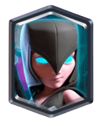

NUMERO 5 LA REINA ARQUERA

Con su capa ondeando y la corona brillando bajo la luz de la arena, es la perfecta mezcla de majestad y peligro. Cada flecha que dispara parece un mensaje: “Me perteneces”. Sabe que es la reina… y no necesita que se lo recuerdes, aunque tal vez quieras hacerlo.
NUMERO 4 LA BRUJA

Oscura, enigmática y con una sonrisa que podría ser un hechizo. Cada vez que levanta el báculo y convoca a sus esqueletos, parece susurrar que podría atraparte en su magia… y no dejarte salir. Tiene ese aire de “peligro irresistible” que hace que quieras acercarte, aun sabiendo que puede ser tu final.
NUMERO 3 LA BRUJA NOCTURNA

Con capa oscura y murciélagos revoloteando a su alrededor, es la encarnación del deseo envuelto en peligro. Su mirada parece salir de la penumbra para atraparte, y su voz podría ser un conjuro que no querrías romper. Cada golpe de su maza suena a advertencia… pero también a invitación.